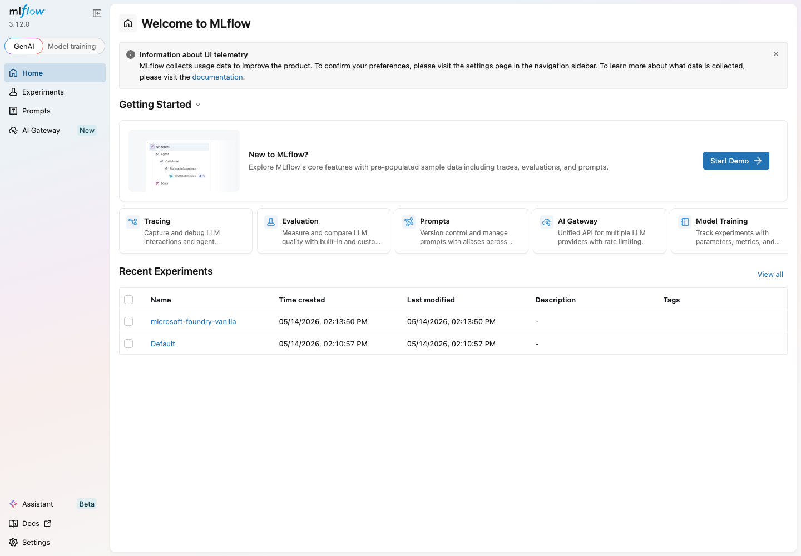
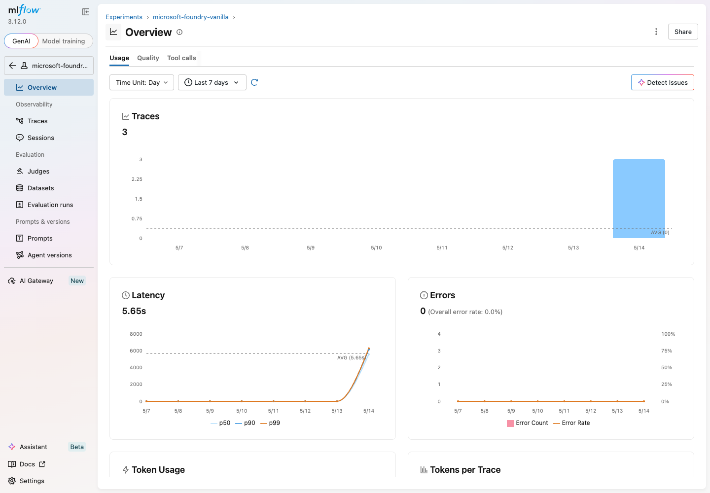
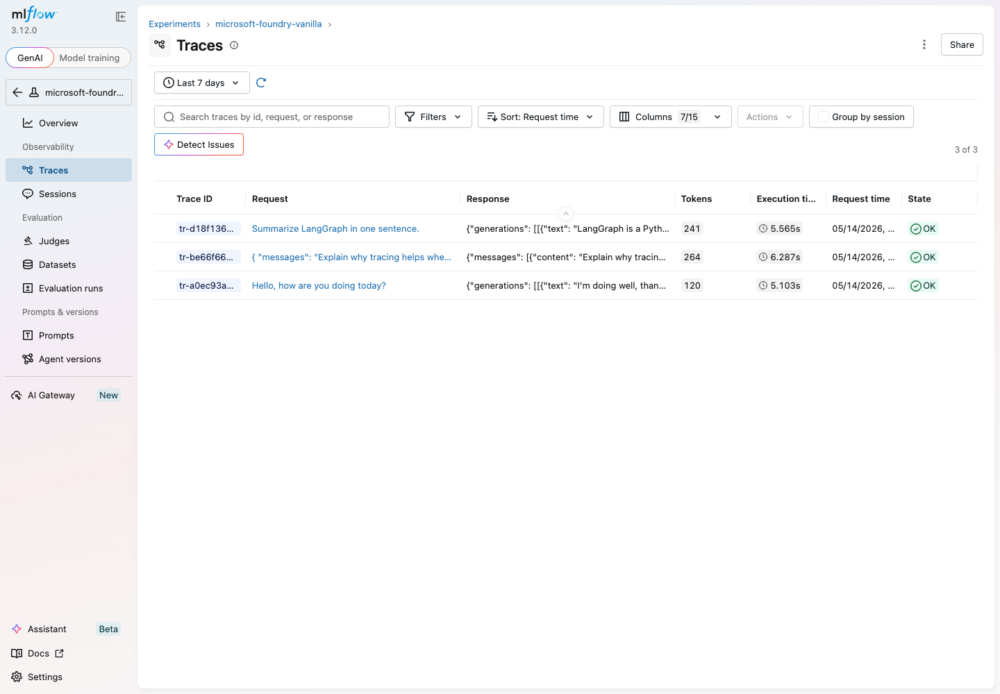
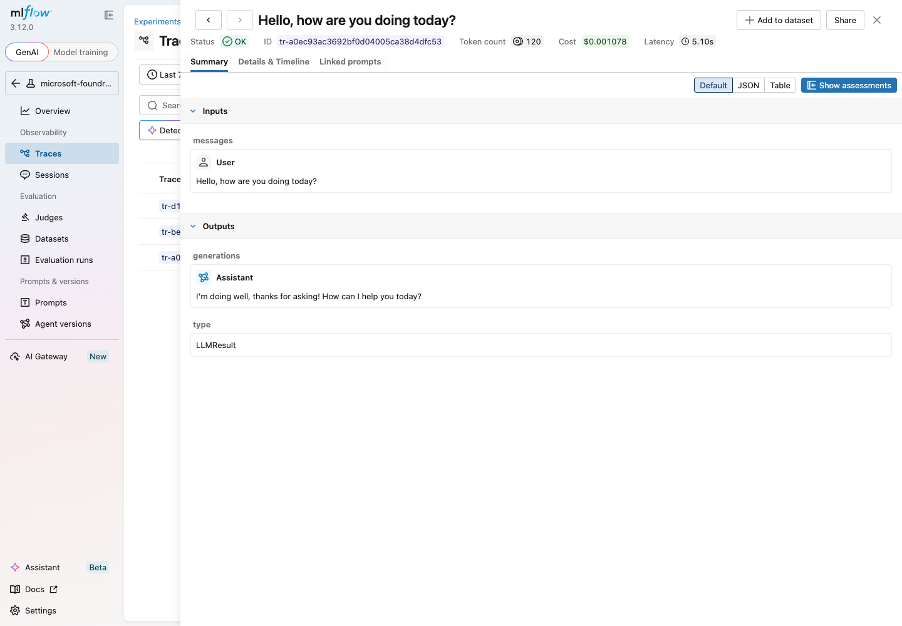
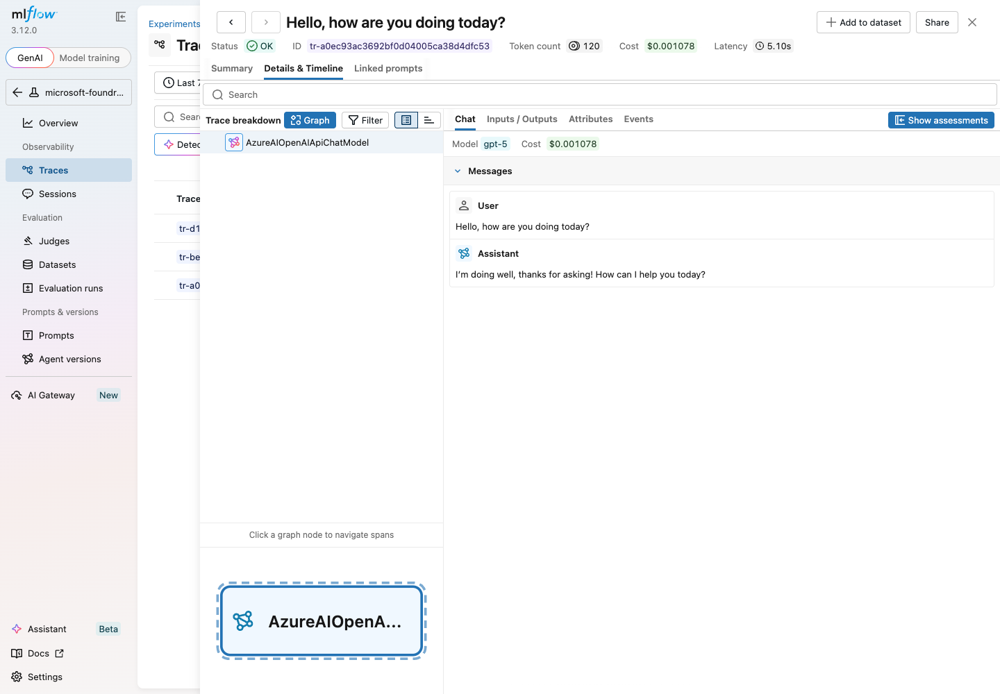

ステップ 2 - 観測性 (トレース & MLflow)¶
ゴール¶
同じ Typer CLI に対して、補完的な 2 つの観測バックエンドを有効化します。
| バックエンド | 用途 | 切替フラグ |
|---|---|---|
| Azure Monitor / Foundry | Foundry ポータル上での LangChain トレース | --tracing |
| MLflow (ローカル) | LangChain / LangGraph / Microsoft Agent Framework / GitHub Copilot SDK のローカルトレース確認 | --mlflow |
両者は独立しており、同時に有効化することもできます。
VS Code GitHub Copilot 自体の観測
本ステップが対象とするのは concierge アプリケーション側 （LangChain / LangGraph / MAF / Copilot SDK のコードパス）の 観測性です。エディタ上の VS Code Copilot Chat 拡張機能 自体の 挙動（オペレーション数 / トークン / ツール呼び出し / モデル別 TTFT） を OTel Collector と Azure Application Insights で可視化する手順は VS Code Copilot を Application Insights で可視化する にまとめています。両者は独立しており、並行運用できます。
Microsoft Agent Framework 対応について
MLflow には Microsoft Agent Framework 専用の mlflow.<flavour>.autolog()
は存在しません。代わりに、OpenTelemetry HTTP exporter 経由でトラッキ
ングサーバーの /v1/traces エンドポイントへスパンを転送します
(本家ドキュメント)。
トラッキング URI が http(s):// のときに enable_mlflow() が
この exporter を自動的に組み込むため、 --mlflow フラグ
(もしくは CONCIERGE_MLFLOW_ENABLED=true) 一つで対応している全
エージェントバックエンドのトレースが MLflow に集約されます。
GitHub Copilot SDK 対応について
GitHub Copilot SDK のセッションは Copilot CLI サブプロセス側で
OpenTelemetry スパンを生成するため、mlflow.<flavour>.autolog()
では捕捉できません。代わりに concierge.observability.build_copilot_sdk_telemetry_config()
が MLFLOW_TRACKING_URI を otlp_endpoint とする
copilot.client.TelemetryConfig を生成し、
CopilotClient(config=SubprocessConfig(telemetry=...)) 経由で
Copilot CLI に渡します。これにより MLflow tracking server の OTLP
エンドポイントへ直接スパンが push され、MLflow UI 上で github-copilot-sdk
エージェントのトレースが他バックエンドと並んで一覧表示されます。
HTTP(S) でない tracking URI (file: / sqlite: など) の場合は
Copilot SDK にテレメトリ設定を渡さず、通常の CopilotClient() で
フォールバック動作します。
なぜこのステップが必要か¶
LLM アプリのデバッグが難しい理由は、興味のある状態がプロンプト・モデル・ ツールの「あいだ」に存在するからです。トレース として記録できれば、 次のような問いに答えられるようになります。
- どのプロンプトでこの誤答が生まれたのか?
- 各ステップでどれくらい時間がかかったのか?
- 各呼び出しで何トークン消費したのか?
このステップでは LangChain を
AzureAIOpenTelemetryTracer
経由で Azure Monitor に接続し、さらに MLflow autologging を追加してローカル
だけで反復開発できるようにします。
flowchart LR
subgraph Sources["発生源 (CLI / Web / Worker)"]
CLI_CHAT["chat-cli"]
WEB_CHAT["chat-web (FastAPI)"]
CLI_CA["cloud-agent-cli"]
WEB_CA["cloud-agent-web"]
WORKER_CA["cloud-agent worker"]
CLI_TODO["todo-cli"]
WEB_TODO["todo-web"]
VANILLA["scripts/*/vanilla.py"]
end
subgraph Shared["concierge/observability.py"]
ENABLE["enable_tracing() / enable_mlflow()"]
BOOT["bootstrap_from_env()"]
TCONF["trace_config(service_name)"]
TRACER["get_tracer(service_name)"]
end
Sources -->|"--tracing / --mlflow"| ENABLE
Sources -->|"CONCIERGE_*_ENABLED=true"| BOOT
ENABLE --> TCONF
TCONF --> TRACER
subgraph Runtime["データ種別"]
TRACE["trace: span tree"]
METRIC["metric: token / latency"]
LOG["log: CLI stderr / app logs"]
end
TRACER --> TRACE
ENABLE --> METRIC
Sources --> LOG
TRACE --> AppInsights[("Azure Monitor / App Insights")]
AppInsights --> Foundry[("Foundry tracing UI")]
METRIC --> MLflow[("Local MLflow UI :5000")]サービス横展開 (chat / cloud_agent / todo)¶
- 共有配線は
concierge/observability.pyに集約。 - CLI は
--tracing/--mlflow/--verbose。 - Web / worker は次の環境変数で切り替え:
CONCIERGE_TRACING_ENABLED=trueCONCIERGE_MLFLOW_ENABLED=true- サービス別 tracer 名:
concierge-chatconcierge-cloud-agentconcierge-todo
切替の実装¶
CLI には Typer コールバックが定義されており、グローバルフラグを切り替えて
対応するバックエンドを遅延的に有効化します
(scripts/microsoft_foundry/vanilla.py)。
@app.callback()
def _global_options(
tracing: bool = typer.Option(False, "--tracing", "-t"),
verbose: bool = typer.Option(False, "--verbose", "-v"),
mlflow: bool = typer.Option(False, "--mlflow", "-m"),
):
global _tracing_enabled
_tracing_enabled = tracing
if mlflow:
_enable_mlflow()
各コマンドは共通ヘルパで invoke / ainvoke / stream を包みます。
def _trace_config(extra=None) -> RunnableConfig:
config = dict(extra or {})
if _tracing_enabled:
callbacks = list(config.get("callbacks", []))
callbacks.append(_get_tracer())
config["callbacks"] = callbacks
return RunnableConfig(**config)
これによりコマンド側に条件分岐を持ち込まずに、トレーサーを一括で適用できる ようになっています。
disable_tracing が必要な理由¶
concierge/observability.py の有効/無効フラグはモジュール単位の
ミュータブルなシングルトン (_state) として保持されます。一度
enable_tracing() で True になると、明示的に戻す手段がない限り
プロセス内に残り続けるため、対になる disable_tracing() を公開 API
として用意しています。具体的には次の 4 つのユースケースで必要です。
- CLI フラグの対称性
--tracingは既定Falseのオプトインです。フラグなしで起動した 際に「以前のセッションや import 副作用でTrueのまま残っている」 可能性を排除するため、各 CLI の bootstrap はelse: disable_tracing()で明示的にリセットします。これがないと「--tracingを付けていない のに tracer が動く」状態が起こり得ます (concierge/chat/infrastructure/cli/app.pyなど)。 - 環境変数からの bootstrap
bootstrap_from_env()はCONCIERGE_TRACING_ENABLED=falseを 「無効化したい意思」として尊重します。長寿命プロセスで設定が再読込 されるケースを想定し、単に enable しないだけでなく能動的にdisable_tracing()を呼びます。 - テスト分離
pytest は同一プロセスで複数テストを回すため、明示的なリセット
手段がないとテスト間でフラグがリークします
(
tests/test_observability.pyの_reset_state())。 - API の完備性
enable/disable/is_enabledを揃えることで、将来追加されうる サブコマンドや HTTP リクエスト単位の制御から決定論的に状態を扱えます。
要するに「シングルトン状態を持つ以上、ON にする API があれば OFF に する API も必須」というのが本質的な理由です。
ステップ 2a - Azure Monitor トレーシング¶
なぜ Azure Monitor か¶
Foundry プロジェクトには Azure Monitor をベースにしたトレーシング機能が 組み込まれています。これに繋ぐと、すべての LangChain 実行を Foundry ポー タル上から横断検索でき、追加のダッシュボードを作る必要がありません。
Foundry 側の有効化¶
トレーシングには Foundry プロジェクトが Application Insights リソースと リンクされている必要があります。まだの場合は Trace LangChain and LangGraph apps with Microsoft Foundry and Azure Monitor の手順でポータルから有効化してください。
--tracing 付きで実行¶
uv run python scripts/microsoft_foundry/vanilla.py --tracing hello-world \
--query "Trace this call please."
このとき内部で生成されるトレーサ:
# _get_tracer() はプロセスごとに一度だけ生成され再利用されます
AzureAIOpenTelemetryTracer(
project_endpoint=get_microsoft_foundry_settings().azure_ai_project_endpoint,
credential=DefaultAzureCredential(),
name="microsoft-foundry-vanilla",
)
動作確認¶
Microsoft Foundry → 該当プロジェクト → トレース を開きます。数秒以内に
microsoft-foundry-vanilla という名前のトレースが現れます。クリックすれば
LangChain 実行ツリー、プロンプト、応答、トークン数を確認できます。
コストと粒度のトレードオフ
本トレーサはプロンプトと応答を完全に取得します。本番運用に近づける フェーズでは、サンプリングや LangChain コールバックフィルター による機密情報のマスキングを併用してください。
ステップ 2b - MLflow によるローカル autologging¶
なぜ MLflow か¶
Foundry トレーシングはチーム共有の本番用途に向きますが、開発ループでは ローカル完結のツールが欲しくなります。MLflow の LangGraph 統合 は 1 行で LangChain / LangGraph の実行を自動記録し、ローカルで動く UI を 備えています。
MLflow サーバの起動¶
リポジトリには http://127.0.0.1:5000 で MLflow を起動する make ター
ゲットがあります。サーバプロセスはフォアグラウンドで動き続けるため、別
ターミナルで実行してください。
実体は以下の通りです。
CLI が使う tracking URI や実験名は .env で上書きできます (既定値は
concierge/settings/observability.py
で定義)。
# .env
MLFLOW_TRACKING_URI=http://127.0.0.1:5000
# 省略可能。未指定時もこの値が既定値です。
MLFLOW_EXPERIMENT_NAME=microsoft-foundry-vanilla
同梱の make mlflow ターゲットは常にポート 5000 で起動します。別ポート
を使う場合は MLflow を手動で起動し、CLI 側の MLFLOW_TRACKING_URI も同じ
URL に合わせてください。
uv run mlflow server \
--host 0.0.0.0 --port 5050 \
--allowed-hosts "*" --cors-allowed-origins "*"
MLFLOW_TRACKING_URI=http://127.0.0.1:5050 \
uv run python scripts/microsoft_foundry/vanilla.py --mlflow hello-world
--mlflow 付きで実行¶
uv run python scripts/microsoft_foundry/vanilla.py --mlflow use-in-agents \
--query "LLM アプリのデバッグにトレースが役立つ理由を一文で説明してください。"
_enable_mlflow() は観測性設定を読み、tracking URI / 実験名を設定したうえ
で mlflow.langchain.autolog() を呼び出します。この初期化は同じ Python
プロセス内でキャッシュされます。
GitHub Copilot SDK のトレースを送る¶
github-copilot-sdk エージェントを使うときは、enable_mlflow() が成功
している状態 (= is_mlflow_enabled() が True) であれば
build_copilot_sdk_telemetry_config()
が TelemetryConfig を返し、GitHubCopilotSdkAgent がそれを
CopilotClient(config=SubprocessConfig(telemetry=...)) 経由で Copilot CLI
サブプロセスに渡します。追加コードは不要で、--mlflow か
CONCIERGE_MLFLOW_ENABLED=true を有効にするだけで Copilot SDK のスパンが
MLflow に流れます。
# CLI フラグで一回限り有効化する場合
uv run cloud-agent-cli --mlflow task dispatch \
--agent-type github-copilot-sdk \
--payload '{"message": "hello"}'
# ワーカーも MLflow 有効で起動する (実際に Copilot セッションを開くのは worker)
uv run cloud-agent-cli --mlflow worker run
HTTP 以外の tracking URI では無効
Copilot SDK 側の telemetry は OTLP HTTP exporter を前提としています。
MLFLOW_TRACKING_URI が http:// / https:// で始まらない場合
(file: や sqlite: でローカルファイルバックエンドを使う場合)、
build_copilot_sdk_telemetry_config() は None を返し、Copilot SDK
にはテレメトリが渡らず通常の CopilotClient() で動作します。
Copilot SDK のトレースを MLflow に送りたい場合は必ず mlflow server
などで HTTP サーバを起動し、MLFLOW_TRACKING_URI=http://... を指定
してください。
プロンプト本文を含めたいとき
build_copilot_sdk_telemetry_config() は capture_content=False で
TelemetryConfig を生成するため、スパンにはメッセージ本文が含まれ
ません。プロンプト / レスポンスもトレースに残したい場合は、
concierge/observability.py の該当箇所を capture_content=True に
変更してください (機微情報を送る可能性がある点に注意)。
動作確認¶
ブラウザで http://127.0.0.1:5000 を開きます。MLflow GenAI ホームに
Recent Experiments として実験が並びます。

microsoft-foundry-vanilla をクリックすると Overview が開きます。
直近 7 日間のトレース数、レイテンシ、エラー率、トークン使用量が集計され
ます。

左サイドバーの Traces タブには autolog で捕捉された LangChain 実行が並びます。各行にはリクエスト・レスポンス・トークン数・レイテンシ・ ステータスが表示されます。

任意の行をクリックすると Summary ビューが開き、入出力・レイテンシ・ トークン数・推定コストを確認できます。

隣の Details & Timeline タブは実行を span 単位に分解して表示し、どの
LangChain プリミティブ（ChatPromptTemplate、モデル呼び出しなど）が
レイテンシを消費したかを把握できます。

両方を組み合わせる¶
Foundry 側の監査ログとローカルのデバッグビューを同時に確認したいケースで は両方を有効化できます。
uv run python scripts/microsoft_foundry/vanilla.py --tracing --mlflow --verbose \
reasoning --model azure_ai:DeepSeek-R1-0528
--verbose を付けるとローカルロガーが DEBUG レベルになり、新規コマンド
を組み込む際の確認に便利です。
サービス別の実行例¶
# chat CLI / web
uv run chat-cli --tracing --mlflow message post <conversation_id> --content "hello"
CONCIERGE_TRACING_ENABLED=true CONCIERGE_MLFLOW_ENABLED=true uv run chat-web
# cloud_agent CLI / worker / web
uv run cloud-agent-cli --tracing --mlflow worker --max-iterations 1
CONCIERGE_TRACING_ENABLED=true CONCIERGE_MLFLOW_ENABLED=true uv run cloud-agent-web
# todo CLI / web (現状 LangChain 呼び出しは無いが、同じ bootstrap を利用)
uv run todo-cli --tracing --mlflow task list
CONCIERGE_TRACING_ENABLED=true CONCIERGE_MLFLOW_ENABLED=true uv run todo-web
周辺コードをテストで確認¶
観測性まわりが依存するロガーと設定クラスは現在のテストで検証されています。
ただし _trace_config、トレーサ生成、MLflow autolog フックはまだ直接テスト
されていません。これらの配線を変更する場合は、モックを使った焦点の狭い
テストを追加し、そのうえでこのスイートを回してください。
トラブルシューティング¶
Foundry にトレースが現れない
Foundry プロジェクトで トレース が有効化されているか、自分の ID に
Azure AI Developer ロールが付与されているか確認します。--tracing
を付けて最初の呼び出しが走るまで何も送信されない点にも注意してくだ
さい。
MLflow UI が空のまま
autolog フックは _enable_mlflow() が呼ばれた 後 にのみ動きます。
make mlflow 側ではなく、モデルを実行する 呼び出し に --mlflow
を付ける必要があります。
ポート 5000 が使用中
前回の make mlflow を Ctrl+C で停止するか、MLflow を手動で別ポート
起動し、CLI 実行時の MLFLOW_TRACKING_URI も同じ URL に合わせます。
make mlflow ターゲット自体はポート 5000 固定です。
github-copilot-sdk のトレースが MLflow に出ない
MLFLOW_TRACKING_URIがhttp(s)://...であることを確認 (file:/sqlite:では Copilot SDK 側にテレメトリが渡りません)。--mlflowを CLI 呼び出し側に付ける、あるいはCONCIERGE_MLFLOW_ENABLED=trueを設定する。- タスクを実際に処理するのは worker プロセス なので、worker 起動時にも
--mlflow/CONCIERGE_MLFLOW_ENABLED=trueを有効化する。 - MLflow tracking server が起動済みで、ヘルスチェック
(
<MLFLOW_TRACKING_URI>/health) が通ること。サーバが落ちていると_is_mlflow_server_reachable()が fail-fast で MLflow 全体を無効化 するため、Copilot SDK のテレメトリも合わせて飛ばなくなります。
次のステップ¶
Foundry + LangChain CLI を観測できる状態まで進めました。永続ベクトル ストア (pgvector) をローカル Docker Compose またはマネージドな Azure Database for PostgreSQL Flexible Server に追加したい場合は、 ステップ 3 - PostgreSQL (pgvector) CRUD に 進みます。